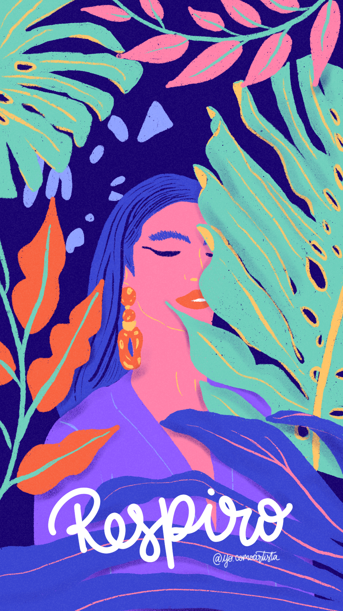
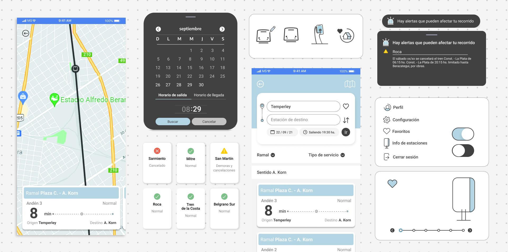
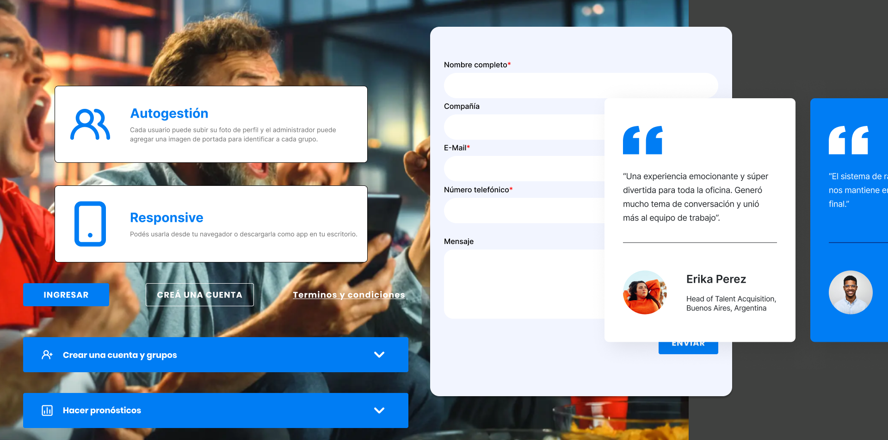
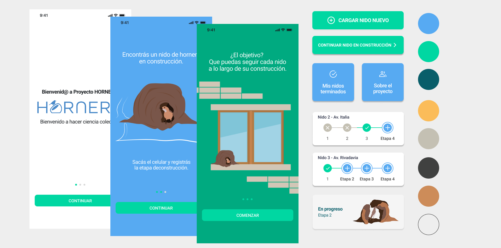
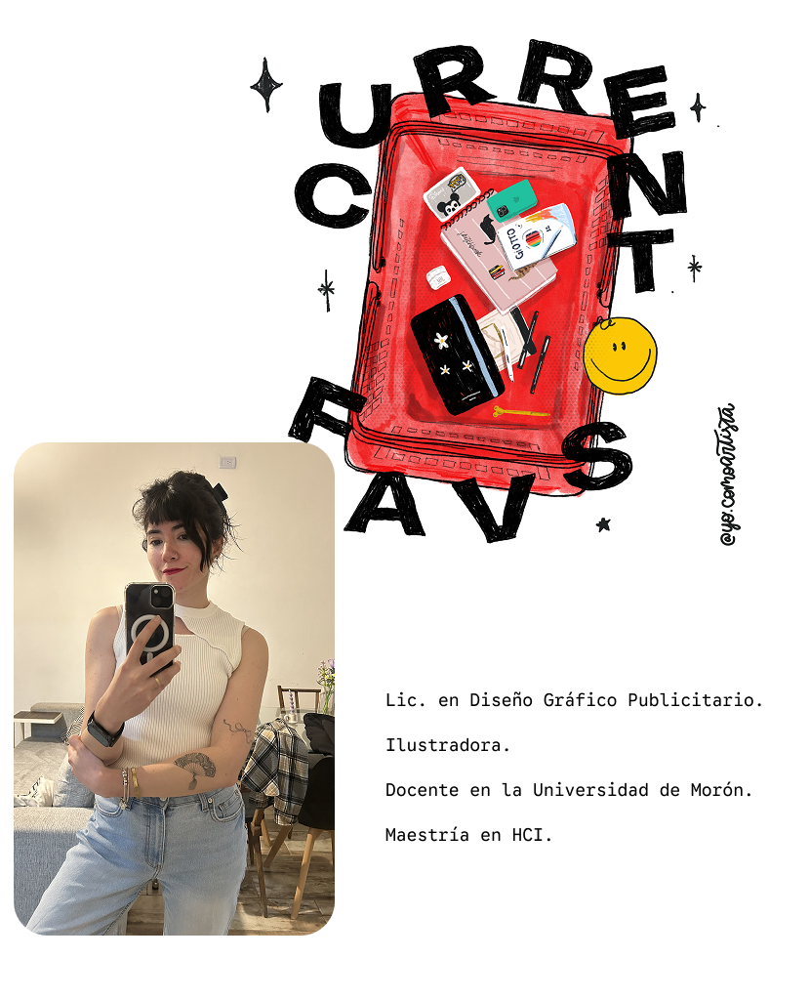

· Diseñadora multidisciplinaria ·
Creo experiencias
digitales con propósito.
Análisis y curaduría para potenciar el diseño a su máximo nivel de expresión. Trabajo integral enfocado en el cuidado estético, comunicacional y funcional.
Ideas sensibles, conceptos claros y soluciones memorables.
Explorar proyectos
Una selección de trabajos
Mis proyectos.
Soy una persona versátil y curiosa. Cada proyecto comienza con una investigación, un análisis y una búsqueda de soluciones. Esta es una selección de diferentes desafíos que disfruté resolver.
+1M usuarios |TRENES ARGENTINOS
Caso de estudio · UX/UI · 2019
Rediseño de la app Trenes Argentinos
Mi primer proyecto de UX/UI: aprovechar por primera vez el seguimiento GPS de los trenes y convertirlo en una experiencia clara para las personas pasajeras.
Ficha técnica
- Año
- 2019
- País
- Argentina
- Industria
- Transporte público / Sector público
- Plataforma
- App móvil (iOS y Android)
- Mi rol
- UX/UI Designer. Armado de flujos, trabajo en Figma, colaboración con desarrollo y encuestas a usuarios.
- Equipo
- Una diseñadora a cargo de la línea visual y el equipo de desarrollo.

01. Una app que informaba, pero no mostraba dónde estaba el tren
La app ya ofrecía el estado del servicio y los horarios, pero no contaba con rastreo GPS. La nueva tecnología permitía seguir el recorrido de los trenes; el desafío era traducir esa posibilidad en una experiencia clara.
02. Mi rol
Recién terminaba mi curso de Coderhouse y este fue mi primer proyecto de UX/UI. La línea visual la lideró otra diseñadora. Me ocupé de llevarla a Figma, definir los flujos que el equipo de desarrollo tenía que implementar y trabajar mano a mano con sus integrantes.
03. Cada ramal tiene un usuario distinto
Hicimos encuestas porque el perfil del pasajero cambia según el ramal.
Dato pendiente: sumar qué descubrimos en las encuestas y qué decisiones de diseño cambiaron a partir de esos hallazgos.
04. Menos esfuerzo mental para decidir rápido
Nos enfocamos en reducir la fricción cognitiva al consultar el número de andén y las cabeceras —por ejemplo, “hacia Moreno” o “hacia Once” en el Sarmiento—. Ese criterio se estandarizó en toda la comunicación: app, redes sociales, cartelería y pantallas de estación.
05. Lo que haría distinto hoy
La app se usa en la calle, en movimiento y muchas veces con apuro o con la inseguridad de sacar el celular en la vía pública. Con ese contexto, hoy revisaría:
- El tamaño de la tipografía y los botones, especialmente “Ir”, para personas con distintas capacidades visuales.
- El contraste: un celeste casi blanco puede ser difícil de leer a la luz del día y en movimiento.
- La ubicación del buscador: lo bajaría cerca de la navegación inferior para facilitar el uso con una mano.
Caso de estudio · Web · 2024-2025
Una web que conecta pasiones
Sitio web para un software de prodes, pago para empresas y gratuito, construido sobre una idea cultural: el prode como ritual que une a amigos, familia y compañeros.
Ficha técnica
- Año
- 2024-2025
- País
- Argentina
- Industria
- Software / Entretenimiento corporativo
- Plataforma
- Sitio web
- Agencia
- Vernon
- Mi rol
- Definición del concepto junto a la agencia y diseño del sitio en co-creación con el cliente.

01. Una web simple que no comunicaba con claridad
El cliente tenía una web con recursos vectoriales, muy simple y sin una comunicación clara de qué ofrecía.
02. Mi rol
Trabajé con Vernon en la definición del concepto que guió todo el proyecto. Después diseñé el sitio junto al cliente, para que el resultado reflejara lo que necesitaban comunicar.
03. Un concepto como hilo conductor
El prode es parte de la cultura argentina. Jugamos con la expresión “el más grande” para llegar a “el más prode”. Buscamos mostrar cómo amigos, familia y compañeros compiten de manera sana y divertida, y cómo el fútbol es una pasión que contagia.
04. Qué sumamos
Un storytelling, un concepto y un diseño moderno. Además, secciones que el sitio no tenía: preguntas frecuentes y testimonios.
Aprender
& ciencia
Una app diferente
Cómo convertir algo para todos.
Caso de estudio · App Android · 2023
Horneros: ilustrar la ciencia para que todos puedan aportar
App para recolectar datos sobre nidos de hornero, con preguntas guiadas e ilustraciones que hacen simple contribuir a una investigación científica argentina.
Ficha técnica
- Año
- 2023
- País
- Argentina
- Industria
- Ciencia / Investigación biológica
- Plataforma
- App Android (primera versión)
- Cliente
- Dos científicos biólogos
- Agencia
- Avra Dev
- Mi rol
- Ilustradora y diseñadora de producto
- Equipo
- Un PM y un desarrollador

01. Un estudio que necesitaba datos claros, de cualquier persona
Los biólogos necesitaban recolectar información sobre los nidos de hornero. Analizamos el objetivo del estudio para definir qué datos eran clave y cómo pedirlos.
02. Mi rol
Fui ilustradora y diseñadora de producto, y trabajé junto a un PM y un desarrollador de Avra Dev. Ilustré al hornero, las etapas del nido y los elementos visuales de la app, y diseñé la experiencia para completarla.
03. Cuatro etapas, cuatro ilustraciones
Cuando alguien encuentra un nido, la app le hace preguntas clave para el estudio. Dividimos el nido en 4 etapas y las representamos con ilustraciones, para que cualquier persona pueda identificar lo que está viendo sin usar términos técnicos.
04. Dibujar un animal real, con científicos mirando cada detalle
Hasta ese momento nunca había ilustrado algo 100% real. Los biólogos se fijaban en la forma del pico, el color y otros detalles, así que cada versión del hornero tenía que ser fiel sin perder la simpleza. Fue la parte más difícil del proyecto y donde más aprendí.
05. Ni infantil ni técnica: fácil de usar en la calle
Buscamos un equilibrio entre una app amigable y una con rigor científico. Sin lenguaje complejo, interactiva y práctica, y que diera ganas de usarla, porque cada dato contribuye a la ciencia argentina. Como los usuarios estarían buscando nidos en la vía pública, elegí botones grandes para poder usar la app rápido y en movimiento.
06. Lo que aprendí
Ilustrar con rigor científico, encontrar el punto medio entre lo infantil y lo técnico, y diseñar pensando en dónde y cómo se usa la app.

Aplico varias disciplinas para obtener propuestas creativas.
Comparto mi kit de conocimiento para potenciarte.
Mi proceso de trabajo combina estrategia y estética para brindar soluciones cuidadas y humanas.
Disfruto colaborar con personas que buscan un diseño consciente para conectar, destacar, comunicar y crecer.
Hablemos de tu proyecto